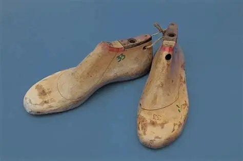
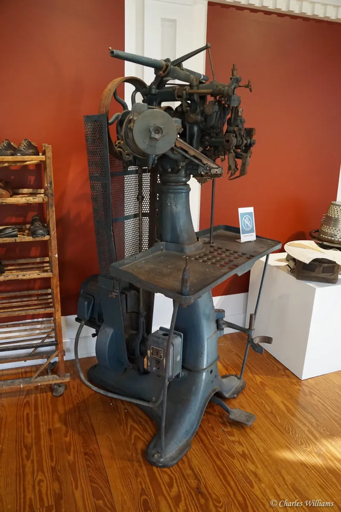
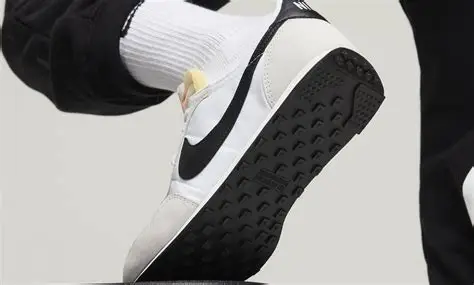

Footwear is a technology I would assume all of us use everyday, yet I think we rarely think about how much it has changed over time. I switch between sneakers, cleats, boots, or sandals depending on the weather or activity and each pair feels normal because this process of shoe selection is now second nature as it’s always been part of my routine. My interest in shoes really stems from my love for sports where certain sneakers help you feel faster or offer more support. This connection allowed me to notice early on how different designs are conducive for different activities. Even though footwear seems simple, it has a long history shaped by science and evolving human needs. For this reason I thought it would be informative and fun to choose footwear as my technology topic of choice. Early shoes were basic protection, people used pieces of leather or a woven material to shelter their feet from sharp ground or extreme weather. These designs worked for survival, however, offered little structure. As society developed, footwear began to gain cultural meaning. In a lot of different places shoes were a sign of status or occupation while still helping to serve practical uses. Shoe makers were constantly experimenting with new stitching, shaping, and reinforcing soles. Over time, new materials and techniques led to major shifts in how footwear was able to be produced and used. To highlight this I’ve selected three key technological moments to show how shoes moved from simple coverings to a modern industry.
One major early turning point in footwear history was the creation of the wooden last. A last is a mold shaped like a foot which shoemakers will use to form the shoe. Before lasts, shoes were often flat and did not typically match the natural curves of one's feet. The introduction of the last allowed for much better fit and support. Early cobblers were the people who developed this innovation as they learned to carve a foot shape from wood. Technologically, the last made it possible to produce shoes with consistent structure. Socially, the new better fitting footwear allowed people to walk for longer distances and amounts of time while experiencing less discomfort. Economically, using lasts allowed shoemaking during the time to become a more organized trade with predictable sizing. This moment is significant because it introduced a design approach based on human anatomy. Without this alteration, changes which may have come about later in terms of comfort and performance would have been much more difficult to achieve.

The next major evolution came during the Industrial Revolution. Before this period shoes were made by hand which required hours of skill labor for each pair. Machines were able to change this process entirely. One of the most important inventions was Jan Ernst Matzelger’s lasting machine in 1883, which attached the upper part of the shoe to the sole. A process that was much faster than a human worker. This technology increased efficiency and consistency while helping to lower cost. It also enabled shoes to become far more affordable to a much larger portion of the population. Socially, this led to improved quality of life for workers and families who needed reliable footwear to suit their lifestyles. Economically, the mass production of shoes led to the inception and growth of large companies and global distribution. Culturally, people were given way more choices in style and function. This shift turned footwear into a widely accessible good rather than a handmade item reserved for only the wealthy that could afford it.

The rise of athletic footwear in the twentieth century represents another significant moment in the evolution of footwear. As sports expanded, companies began to develop specialized shoes for specific activities. Bill Bowerman, the cofounder of Nike, became a prominent figure by experimenting with cushioning and traction for his athletes. His waffle sole, funnily enough, created by an actual kitchen waffle iron became famous for its simplicity and effectiveness. This development signified the start of shoe design to boost athletic performance. Technologically, companies were able to introduce cushioning systems and new lightweight materials. In terms of social impact, athletic footwear encouraged more participation in sports and fitness. Economically, the sneaker industry grew into a major global business. And culturally, athletic shoes eventually shifted from sports gear to a staple of fashion.

The history of footwear shows how human needs help drive technological change. The creation of the last improved shoes fit. Industrialization helped to make shoes more accessible. And athletic footwear linked design with performance, helping to shape the landscape of modern fashion. Each of the moments highlighted pushed shoes toward greater purpose. Footwear remains very important for all the reasons listed above but also reflects historical changes, from the early survival tactics of humans, to global innovation and sports culture. Understanding this history can help us truly appreciate how shoes support us today and why they will matter in the future.